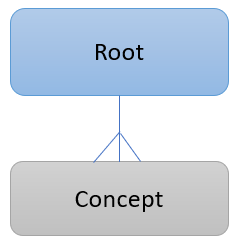
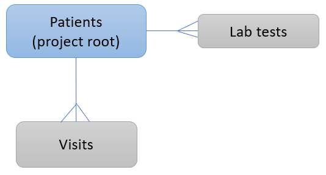

Configuring the Data Dictionary
The Chiron data dictionary is a set of Django models containing metadata about your patient data. Most of the customization of Chiron is controlled by the data dictionary. It defines how your MongoDB database will be structured, how the data will be pulled into MongoDB during the ETL process, how queries work, and how the data will be presented to users through the user interface.
Note that the data dictionary is metadata about your patient data - not the patient data itself - and is stored in a standard relational database using the Django ORM.
How the data dictionary relates to the MongoDB Structure
Your MongoDB structure is affected by the Root and Concept models in your data dictionary:
{kind=link}
The Root model contains a list of all the data collections you will have in your MongoDB database. You will have one and only one project root in your Root model, which is typically a patient or research subject. Then you can have any number of additional roots representing subcollections that are 1:many with your project root.
The Concept model contains a list of all fields you have data for. Typically, fields will be associated with the Root that they are 1:1 with. So for example, concepts like gender and DOB should be associated with your Patient root. If patients have multiple visits, you’d want to create a Visit root for concepts like visit date, visit location, visit reason, etc.
As an example, consider a system to keep track of patients visiting your clinic. Patients can visit any number of times, and they can also have any number of lab tests run. You could define three Root records:
Patient root (set as project root)
Visit root
Lab test root
This would correspond to a relational structure as follows:
{kind=link}
In MongoDB, all of the data is stored in a single collection of documents. Each document would represent a patient since that is the project root. Then if that patient had any visits or lab tests, those would be embedded in the patient document as a subcollection.
# the patient collection
[
{
_id : 123,
gender: "female",
DOB: "1977-05-12"
...
visit_docs : [
{_id: 1, location: "Barret Center", ...},
...
],
labtest_docs : [
{_id: 1, lab_name: "blood glucose", ...},
...
]
},
...
]
How the data dictionary relates to the ETL Process
Chiron has a management command chiron_run_etl that will automatically pull source data into
MongoDB based on the rules defined in the data dictionary. The ETL process is affected by the
following data dictionary models:
{kind=link}
We’ve already discussed the Root and Concept models.
The SouceCollection model contains a list of datasets to load into Chiron. A source collection can be any Python iterable of the root it’s associated with. For example, a source collection on root “patients” could simply be a Django queryset based on a Patient model. Or it could be a CSV file with one line per patient. A source collection on root “surveys” could be any iterable that returns one survey at a time. If your data source doesn’t match neatly to an iterable, you will need to create a custom iterable function or class for it.
There are two processor classes that are relevant to the ETL process.